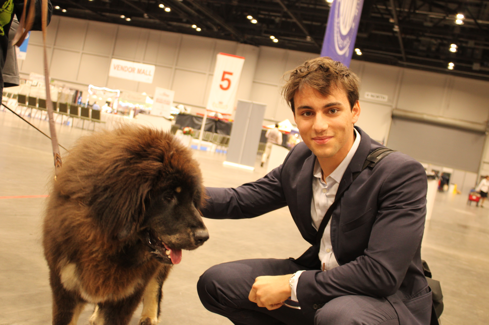
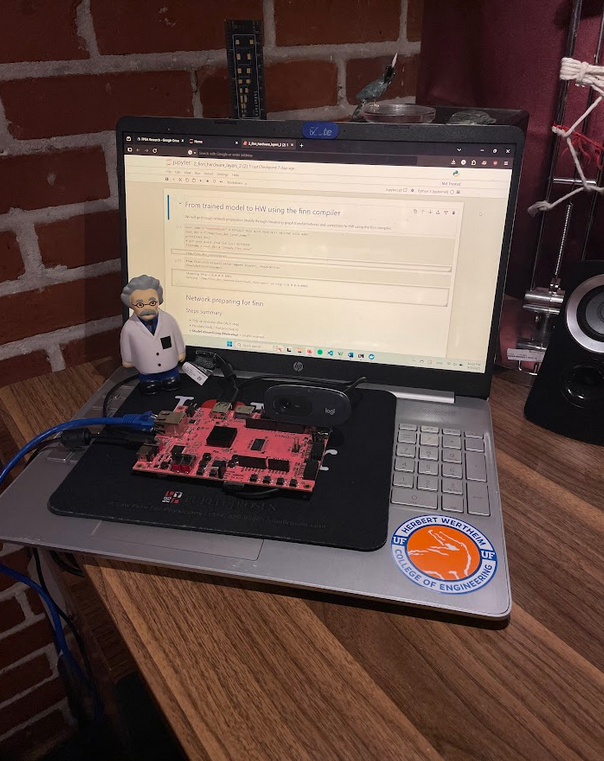
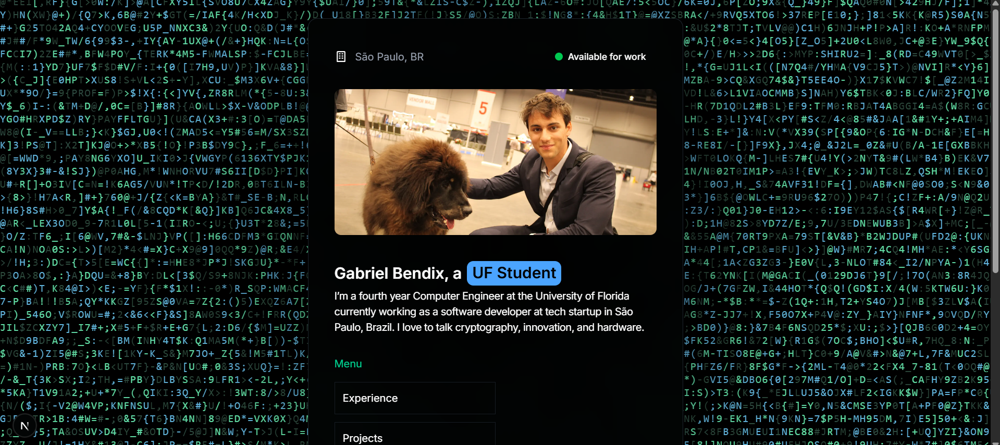
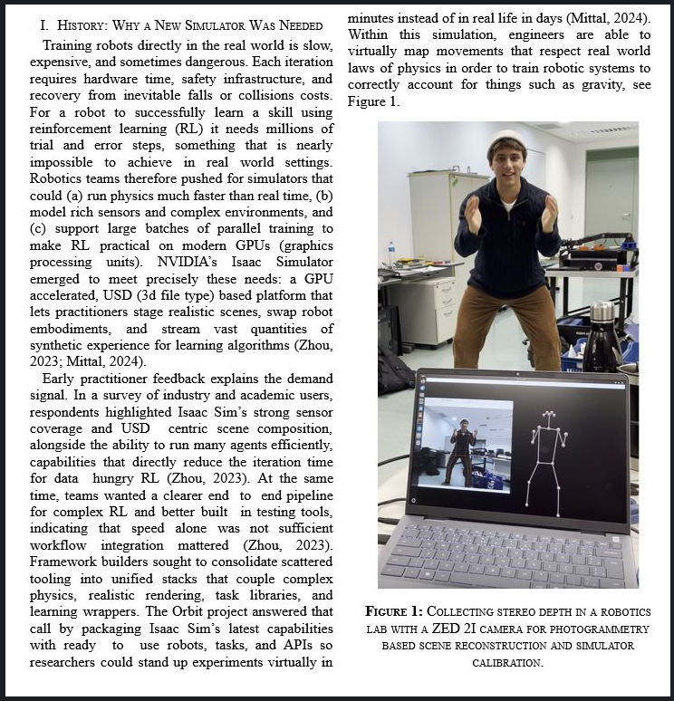
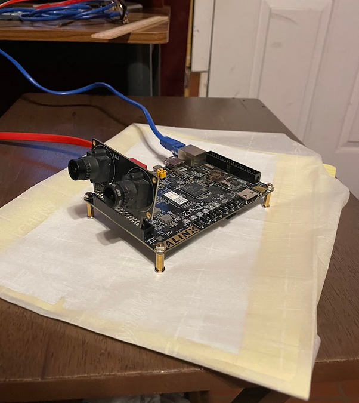
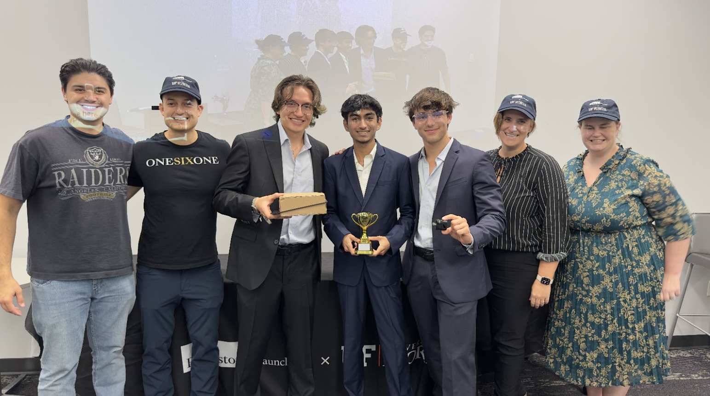
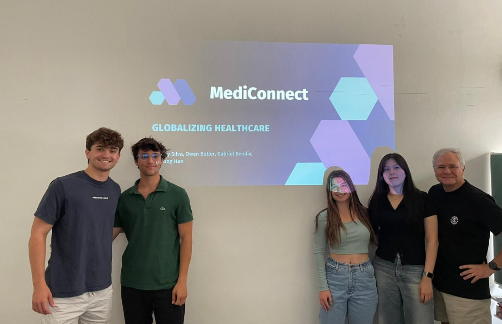
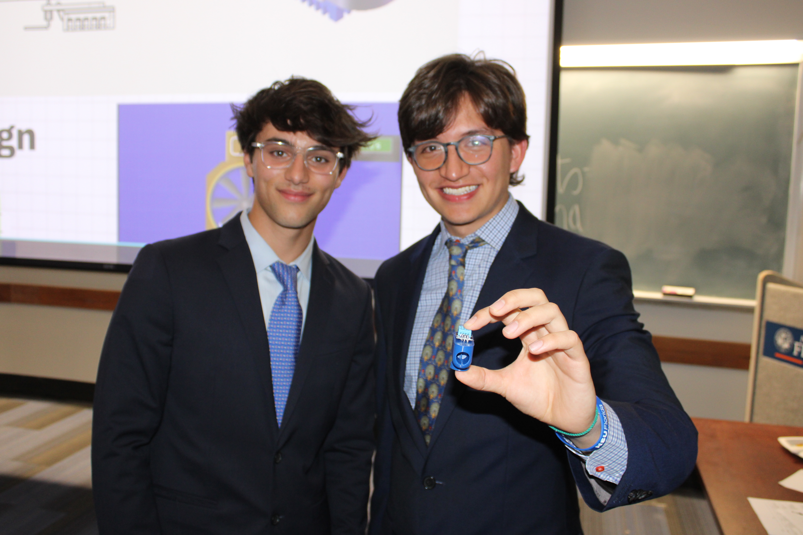
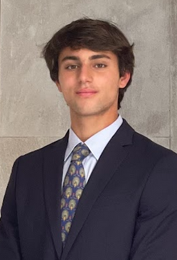

I build custom, low-precision neural-network accelerators on PYNQ FPGA Board using FINN, turning quantized PyTorch/ONNX models into streaming, hardware pipelines for edge AI. The work targets W2–W8/A2–A8 quantization to hit real-time latency/throughput on PYNQ-class boards while preserving accuracy.

A custom portfolio showcasing my projects, rotating text animations, and responsive design to highlight my skills and experience. This project demonstrates my ability to create modern, interactive web applications with smooth animations and responsive layouts.

Deployed GPU-accelerated computer vision pipeline with ZED 2i depth perception camera, cutting end-to-end latency by 15%. Applied CUDA and ROS on Ubuntu Linux to run autonomous navigation algorithms for a robotics competition.

Streamlined low light event camera scene analysis for applications in UAV applications in low light scenarios. Developed hardware pipelines that utilize machine learning on a PYNQ FPGA board in Jupyter Notebooks. Built an FPGA accelerated deep processing unit targeting machine vision via Vivado, cutting end-to-end latency by 15%.

Created a system combining NASA FIRMS API data with a mobile app and hardware alarm to notify users (and at-risk relatives) when wildfires approach.

Built a web app deployed serverlessly at near-zero cost that translates prescription requests into local medication equivalents via an AI chatbot and locates open pharmacies using the Leaflet API with address geocoding.

Designed a pressure-sensing valve that instantly shuts off damaged sprinkler systems with home and industrial applications.
Leading cutting-edge research in Computer Vision Deep Processing Unit development. Streamlined low light event camera scene analysis for UAV applications and developed FPGA-accelerated deep processing units for machine vision applications.
Developed scalable data processing solutions and web applications for a leading Brazilian data company. Utilized production data to create real-time analytics and visualization tools with exceptional accuracy.
Developed advanced computer vision systems for autonomous robotics competition. Deployed GPU-accelerated computer vision pipeline with ZED 2i depth perception camera, significantly improving system performance and enabling real-time autonomous navigation.
One of 14 student coordinators of IGNITE,the only EII backed program promoting entrepreneurship at UF with panels, VCs, and workshops. Worked on campus-wide outreach initiatives, building valuable entrepreneurship partnerships with student organizations.
Automated advanced data analysis and stakeholder communication for large-scale construction projects. Developed systems to streamline project workflows and improve decision-making processes for engineering teams.

I'm a Computer Engineering student at the University of Florida, passionate about creating innovative solutions that bridge the gap between hardware and software. With expertise in FPGA design, embedded systems, and full-stack development, I focus on building cutting-edge technology solutions that make a real-world impact.
Currently working as an FPGA Researcher, I specialize in computer vision deep processing units, machine learning acceleration, and event camera systems for UAV applications. When I'm not developing hardware or software, you can find me leading entrepreneurship initiatives, competing in robotics competitions, or exploring new technologies that push the boundaries of what's possible.
Specialized coursework in FPGA design, embedded systems, computer vision, and machine learning. Active in research and entrepreneurship programs with hands-on experience in hardware acceleration and deep processing unit development.
I'm always interested in new opportunities and exciting projects. Feel free to reach out if you'd like to collaborate or just say hello!